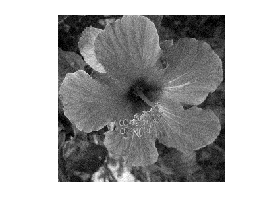
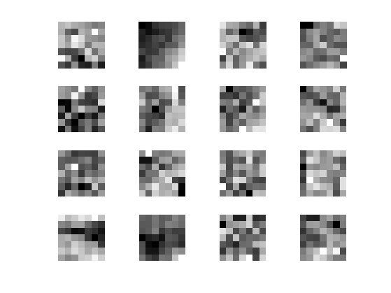
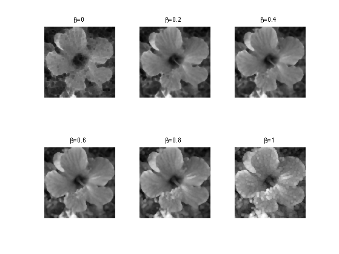
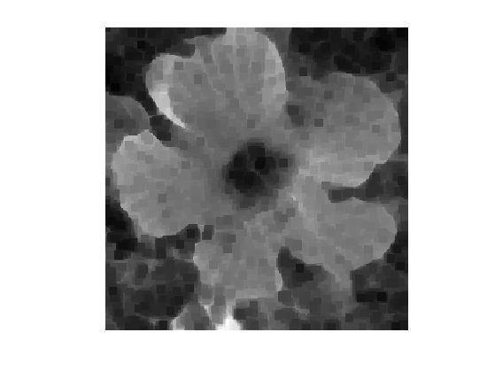
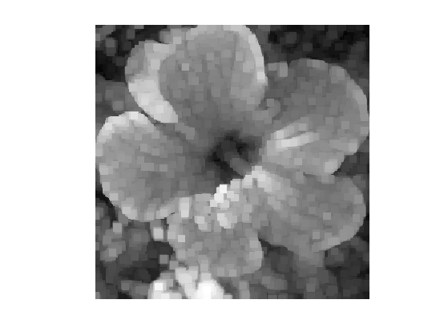
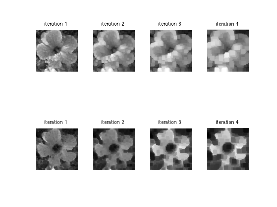
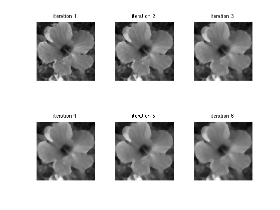

Rank Filters for Image Processing
This numerical tour explores non-linear local filters that proceeds by ordering the pixels in a neighboorhood and selecting a given ranked entry.
Contents
Installing toolboxes and setting up the path.
You need to download the following files: signal toolbox and general toolbox.
You need to unzip these toolboxes in your working directory, so that you have toolbox_signal and toolbox_general in your directory.
For Scilab user: you must replace the Matlab comment '%' by its Scilab counterpart '//'.
Recommandation: You should create a text file named for instance numericaltour.sce (in Scilab) or numericaltour.m (in Matlab) to write all the Scilab/Matlab command you want to execute. Then, simply run exec('numericaltour.sce'); (in Scilab) or numericaltour; (in Matlab) to run the commands.
Execute this line only if you are using Matlab.
getd = @(p)path(p,path); % scilab users must *not* execute this
Then you can add the toolboxes to the path.
getd('toolbox_signal/'); getd('toolbox_general/');
Continuous Rank Filtering
We consider an image \(f : [0,1]^2 \rightarrow \RR\).
For any \(\beta \in [0,1]\), we define the rank filter \(\phi_\be^B\) of order \(\beta\) associated to a set \(B\) to be \[ g = \phi_\beta^B(f) \qwhereq g(x) = \inf \: \enscond{t \in \RR}{ \mu( f^{-1}(]-\infty,t]) \cap x+B ) \geq \mu(B)/2 }. \] where \(\mu\) is the Lebesgue measure on \(\RR\).
One usually assumes that \(B\) is the ball of radius \(\epsilon>0\) \[ B = B_\epsilon = \enscond{x}{\norm{x} \leq \epsilon}. \]
When \(\be=0\) (resp. \(\be=1\), resp. \(\be=1/2\)), then \(g(x)\) is the miniminimum (resp. maximum, resp. median) value of \(f\) in a small neighboorhood of radius \(\epsilon\) \[ \phi_0^{B_\epsilon}(f)(x) = \umin{\norm{y-x} \leq \epsilon} f(y), \] \[ \phi_{1/2}^{B_\epsilon}(f)(x) = \umax{\norm{y-x} \leq \epsilon} f(y), \] \[ \phi_{1}^{B_\epsilon}(f)(x) = \underset{\norm{y-x} \leq \epsilon}{\text{median}} f(y). \]
The operator \(\phi_\beta^B\) is contrast-invariant, meaning that it computes with increasing functions \( \psi : \RR \rightarrow \RR \) \[ \phi_\beta^B \circ \psi = \psi \circ \phi_\beta^B. \] The axiomatic study of contrast invariant operator was initiated in the comunity of mathematical morphology, see [Matheron75], [Tukey77], [Serra82].
Note also that there exist generalization of rank filters (and in particular the median filter) to vector valued images \( f : [0,1]^2 \rightarrow \RR^d\). Since the notion of rank does not exists anymore, one has to rely on variational caracteriation of the median, see for instance [CasSapChu00].
The medial filtering is the most popular rank filter. It is particularly efficient to remove impulse noise, see for instance [Piterbarg84], [FanHall94]. See also [AriasDon99] for a theoritical analysis of median filtering and of a two-stage iterated version.
Patches in Images
We apply rank filters to discretized images by interpreting them as piecewise constant functions.
Size \(N = n \times n\) of the image.
n = 256;
We load an image \(f_0 \in \RR^N\).
name = 'hibiscus';
f0 = load_image(name, n);
f0 = rescale(crop( sum(f0,3) ,n));
Display \(f_0\).
clf; imageplot(f0);
Noise level \(\si\).
sigma = .04;
Generate a noisy image \(f=f_0+\epsilon\) where \(\epsilon \times \Nn(0,\si^2\text{Id}_N)\).
f = f0 + randn(n,n)*sigma;
Display \(f\).
clf; imageplot(clamp(f));
For simplicity, we consider the case where the set \(B\) is a square of \(w_1 \times w_2\) pixels. where we denote \(w\) to be the half width of the patches, and \(w_1=2w+1\) the full width.
w = 3; w1 = 2*w+1;
We define the patch extraction operator \[ p = p_x(f) \in \RR^{w_1 \times w_1} \qwhereq \forall -w \leq s_1,s_2 \leq w, \quad p(s) = f(x+s). \]
We now define the function \(\Pi(f) = (p_x(f))_x \) that extracts all possible patches.
We set up large \((n,n,w_1,w_1)\) matrices to index the the X and Y position of the pixel to extract.
[Y,X] = meshgrid(1:n,1:n); [dY,dX] = meshgrid(-w:w,-w:w); dX = reshape(dX, [1 1 w1 w1]); dY = reshape(dY, [1 1 w1 w1]); X = repmat(X, [1 1 w1 w1]) + repmat(dX, [n n 1 1]); Y = repmat(Y, [1 1 w1 w1]) + repmat(dY, [n n 1 1]);
We handle boundary condition by reflexion
X(X<1) = 2-X(X<1); Y(Y<1) = 2-Y(Y<1); X(X>n) = 2*n-X(X>n); Y(Y>n) = 2*n-Y(Y>n);
Patch extractor operator \(\Pi\).
Pi = @(f)reshape( f(X + (Y-1)*n), [n n w1*w1] );
We store the patches \(\Pi(f)\) as a \(n \times n \times w_1^2\) matrix \(P\) such that, for each pixel \(x\), \(P(x)\) is a vector of size \(w_1^2\) storing the entries of \(p_x(f)\).
P = Pi(f);
Display some example of patches
clf; for i=1:16 x = floor( rand*(n-1)+1 ); y = floor( rand*(n-1)+1 ); imageplot( reshape(P(x,y,:,:), w1,w1), '', 4,4,i ); end
Linear Filter
A linear filter (convolution) can be computed using this patch representation as \[ g(x) = \sum_{i} \la_i p_x(f)_i. \]
In the case where \(\la_i=1/w_1^2\), this defines the mean value inside the patch: \[ g(x) = \frac{1}{w_1^2} \sum_{i} p_x(f)_i. \]
Pmean = @(f)mean(Pi(f),3);
Display it.
clf; imageplot(Pmean(f));
Note that this is not a rank filter (this a linear filter) and that it is not contrast invariant. This is shown by displaying \[ \phi_\beta^B(f) - \psi^{-1} \circ \phi_\beta^B \circ \psi(f) \] which is non-zero.
p = 100; psi = @(f)f.^(1/p); ipsi = @(f)f.^p; imageplot(Pmean(abs(f)) - ipsi(Pmean(psi(abs(f)))));

Opening and Closing Rank Filters
We now come back to the discrete computation of a rank filter \(\phi_\be^B\) for \(B\) a square of width \(w_1 \times w_1\) pixels.
It is defined as \(g=\phi_\beta^B(f)\) where \[ g(x) = \text{rank}_{r(\beta)}( p_x(f) ) \] where \(\text{rank}_r(v)\) extracted the element of order \(k\) in the sorted value of \(v \in \RR^Q\) (here \(Q=w_1^2\)). More precisely, we denote \[ v_{\si(1)} \leq v_{\si(2)} \leq \ldots \leq v_{\si(Q)} \] where \(\si \in \Sigma_Q\) is an ordering permutation, which can be computed in \( O(N \log(N)) \) operations with the QuickSort algorithm. Then the ranked valued is \[ \text{rank}_r(v) = v_{\si(r)}. \]
In order to be consistent with the continuous definition of the rank filter, one should define the rank as \[ r=r(\beta) = \lfloor Q r \rfloor. \]
r = @(beta)min(ceil(beta*w1*w1)+1,w1*w1);
Shortcut for the rank filter.
subsample = @(x,s)x(:,:,s); phi = @(f,beta)subsample(sort(Pi(f), 3), r(beta));
Exercice 1: (check the solution) Compute the rank filter for several values of \(\beta\).
exo1;
The case \(\beta=0\) corresponds to the closing operator from mathematical morphology (min filter).
closing = @(f)phi(f,0); clf; imageplot(closing(f));
The case \(\beta=1\) corresponds to the opening operator from mathematical morphology (max filter).
opening = @(f)phi(f,1); clf; imageplot(opening(f));
Exercice 2: (check the solution) Compute a closing followed by an opening.
exo2;
Exercice 3: (check the solution) Compute an opening followed by a closing.
exo3;
Exercice 4: (check the solution) Perform iterated opening and closing.
exo4;
Median Filter
The median filter corresponds to the case where \(\be=1/2\).
medfilt = @(f)phi(f,1/2);
Display the result.
clf; imageplot(medfilt(f));

Iterated median filtering computes \[ f^{(\ell+1)} = \phi_{1/2}^B( f^{(\ell)} ). \] As already mentionned, one can show that a properly
In the case where \(f\) is of class \(C^3\) and \(\nabla f(x) \neq 0\), one has the following Taylor expansion \[ \phi_{1/2}^{B_\epsilon}(x) = f(x) + \frac{\epsilon^2}{6} \norm{\nabla f(x)} \text{Curv}(f)(x) + O(\epsilon^{7/3}) \] where the curvature operator is \[ \text{Curv}(f) = \text{div}\pa{ \frac{\nabla f}{\norm{\nabla f}} }. \]
Intuitively, it means that if one iterates the operator \( \phi_{1/2}^{B_\epsilon} \) with a proper re-scaling \(\ell \leftrightarrow t\) and when \(\epsilon \rightarrow 0\), then \(f^{(\ell)}\) tends to the solution to the famous mean-curvature motion PDE \[ \pd{f}{t} = \norm{\nabla f} \text{Curv}(f). \]
This conjecture was initially mentionned in [BeMerOsh92]. This was rigorously proved in [Ishii95], [BarGeorg], [Evans93] using the machinery of viscosity solutions.
Similar result holds for other class of contrast invariant operator, see for instance [Cao98] for affine invariant operators, and [GuiMoRy04] for an axiomatic and general framework.
Exercice 5: (check the solution) Perform iterated median filtering, and store the output in f1.
exo5;
Display.
clf; imageplot(f1);
Bibliography
- [Matheron75] G. Matheron, Random Sets and Integral Geometry, Wiley, New York, 1975
- [Serra82] J. Serra, Image Analysis and Mathematical Morphology, Academic Press, London, 1982
- [Tukey77] J. W. Tukey, Exploratory Data Analysis. Addison-Wesley, Reading, MA, 1977
- [BeMerOsh92] J. Bence, B. Merriman, S. Osher, Diffusionn generated motion by mean curvature, Selected Lectures in Math. Amer. Math. Soc., Providence, 1992
- [Cao98] F. Cao, Partial differential equations and mathematical morphology. J.Math. Pures Appl. 77 909?941, 1998
- [Ishii95] H. Ishii, A generalization of the Bence, Merriman and Osher algorithm for motion by mean curvature, 1995
- [BarGeorg] G. Barles and C. Georgelin, A Simple Proof of Convergence for an Approximation Scheme for Computing Motions by Mean Curvature, SIAM J. Numer. Anal., 32(2), 484?500, 1995.
- [Evans93] L. C. Evans, Convergence of an algorithm for mean curvature motion, Indiana Univ. Math. J., 42, pp. 533?557, 1993.
- [GuiMoRy04] F. Guichard, J-M. Morel and Robert Ryan, Contrast invariant image analysis and PDE's, 2004.
- [CasSapChu00] V. Caselles, G. Sapiro and D. H. Chung, Vector median filters, inf-sup operations, and coupled PDEs: Theoretical connections. J. Math. Imaging Vision 12 109?119, 2000
- [Piterbarg84] L. I. Piterbarg, Median filtering of random processes, Problemy Peredachi Informatsii, 20, 65?73, 1984.
- [FanHall94] J. Fan and P. Hall, On curve estimation by minimizing mean absolute deviation and its implications. Ann. Statist. 22 867?885, 1994.
- [AriasDon99] E. Arias-Castro and D. L. Donoho, Does the median filter truly preserve edges better than linear filtering?, The Annals of Statistics, Vol. 37, No. 3, 1172-1206, 2009.